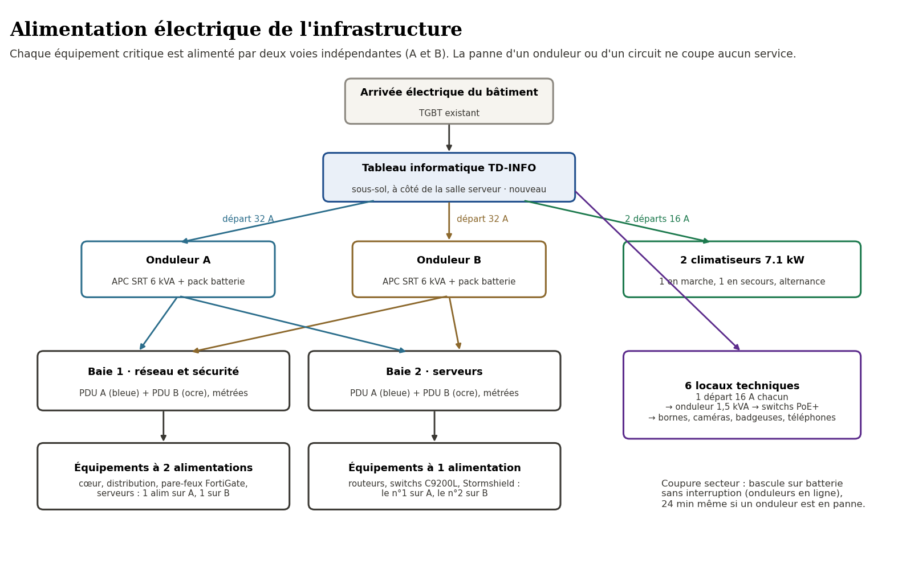

Site de Marseille · IUT Génie Télécom, Luminy · point 14 du cahier des charges · 12/11/2026
Alimentation électrique, onduleurs, climatisation des locaux techniques, consommation et coûts de l'infrastructure réseau.
| Demande | Source | Réponse | Partie |
|---|---|---|---|
| Locaux techniques : rack, alimentation électrique, climatisation, accès par badge | Consignes, traitement A (architecture physique) | Salle serveur + 6 locaux, baies, onduleurs, clim/ventilation, badgeuses | 2, 3, 4 |
| Bilan de puissance par baie | Roadmap, point 14 | Bilan équipement par équipement, baie par baie et local par local | 2 |
| Dimensionner les onduleurs | Roadmap, point 14 | 2 onduleurs en ligne 6 kVA (voies A/B) + 6 onduleurs 1,5 kVA, autonomie vérifiée | 3 |
| Climatisation de la salle serveur | Roadmap, point 14 | 2 climatiseurs techniques (1 en secours), allée froide, ventilation des locaux | 4 |
| Mesure de consommation, PUE et Green IT ; développement durable obligatoire | Roadmap ; consignes (DD, green IT) | PDU et sondes supervisées, PUE calculé, 3 mesures d'économie chiffrées | 5 |
| Data center : règles de base, PRA | Consignes, traitement C | Redondance électrique et frigorifique ; le PRA complet est traité au point 15 | 3, 4 |
| Chiffrage « carte blanche mais réaliste » | Consignes | Investissement, coûts annuels, économies, coût sur 5 ans, options écartées | 6 |
Puissances relevées sur les fiches constructeur (valeur typique et maximale). La pointe réaliste retient 80 % de la somme des maxima, car tous les équipements ne sont jamais au maximum en même temps.
| Baie | Équipements | Modèle | Nb | Alim. | Typique | Max. |
|---|---|---|---|---|---|---|
| 1 | EL-RTR1, EL-RTR2 | Cisco C8200L-1N-4T | 2 | 1 | 40 W | 60 W |
| 1 | EL-FGT1, EL-FGT2 | FortiGate 120G | 2 | 2 | 80 W | 130 W |
| 1 | EL-SW1, EL-SW2 | Cisco C9200L-24T-4X | 2 | 1 | 80 W | 120 W |
| 1 | EL-SNS1, EL-SNS2 | Stormshield SN710 | 2 | 1 | 90 W | 140 W |
| 1 | DM-SW1, DM-SW2 | Cisco C9200L-24T-4X | 2 | 1 | 80 W | 120 W |
| 1 | CL-SW1, CL-SW2 | Cisco C9500-16X | 2 | 2 | 320 W | 520 W |
| 1 | DL-SW1 à DL-SW4 | Cisco C9500-16X | 4 | 2 | 640 W | 1 040 W |
| 1 | NM-SW1, NM-SW2 | Cisco C9200L-24T-4X | 2 | 1 | 80 W | 120 W |
| 1 | Tiroirs optiques | Rocades et adductions | 3 | — | 0 W | 0 W |
| 2 | DM-RP1/2, DM-DNS1, DM-WEB1, DM-MAIL1, DM-SRV1 | Dell PowerEdge R260 | 6 | 2 | 660 W | 1 140 W |
| 2 | DT-SW1, DT-SW2 | Cisco C9300X-12Y | 2 | 2 | 260 W | 440 W |
| 2 | DT-AD1/2, DT-RAD1/2, DT-DHCP1/2 | Dell PowerEdge R360 | 6 | 2 | 720 W | 1 200 W |
| 2 | NM-PVE1 à NM-PVE3 | Dell PowerEdge R660xs | 3 | 2 | 780 W | 1 260 W |
| 2 | DT-BKP1 | Dell PowerEdge R760xd2 | 1 | 2 | 320 W | 480 W |
| Baie 1 (réseau, sécurité) : 28U occupés sur 42 · Baie 2 (serveurs) : 26U | 4 150 W | 6 770 W | ||||
Salle serveur : 4.15 kW en fonctionnement normal, 5.42 kW en pointe réaliste.
| Local | Switchs | PoE typique | PoE max. | Charge typique | Charge max. |
|---|---|---|---|---|---|
| N-1-LT01 | 1 | 52 W | 103 W | 113 W | 169 W |
| N-1-LT02 | 1 | 36 W | 70 W | 95 W | 133 W |
| N0-LT01 | 2 | 172 W | 333 W | 301 W | 480 W |
| N0-LT02 | 4 | 202 W | 385 W | 444 W | 648 W |
| N1-LT01 | 2 | 98 W | 192 W | 219 W | 323 W |
| N1-LT02 | 5 | 136 W | 262 W | 426 W | 566 W |
PoE : alimentation des bornes Wi-Fi, caméras, badgeuses et téléphones par leur câble réseau. « Max. » = puissance réservée par le switch (classe PoE) ; « typique » = consommation réelle moyenne.

| Situation | Charge d'un onduleur | Taux | Autonomie |
|---|---|---|---|
| Normale (les deux onduleurs se partagent la charge) | 2 075 W | 35 % | 65 min |
| Un onduleur en panne : l'autre porte tout | 3 965 W | 66 % | 24 min |
| Un onduleur en panne, en pointe | 5 192 W | 87 % | — |
✔ Règle de dimensionnement : moins de 80 % en marche normale (35 %) et moins de 90 % pour un onduleur seul en pointe (87 %), situation rare qui cumule une panne et une pointe. Des onduleurs de 8 kVA (≈ 2 800 € de plus) ne sont donc pas nécessaires. Sans batterie supplémentaire, l'autonomie avec un seul onduleur ne serait que de 7.9 min : on ajoute un pack batterie par onduleur pour dépasser l'objectif de 10 min (arrêt propre des serveurs, coupures courtes).
| Local | Charge max. | Taux | Autonomie |
|---|---|---|---|
| N-1-LT01 | 169 W | 17 % | 175 min |
| N-1-LT02 | 133 W | 13 % | 280 min |
| N0-LT01 | 480 W | 48 % | 23 min |
| N0-LT02 | 648 W | 65 % | 13 min |
| N1-LT01 | 323 W | 32 % | 50 min |
| N1-LT02 | 566 W | 57 % | 17 min |
Chaque local a son départ 16 A dédié. Les bornes, les téléphones et les badgeuses restent alimentés pendant une coupure. Autonomies : courbes constructeur indicatives, à confirmer avec l'outil du fabricant.

Toute l'électricité consommée devient de la chaleur. À évacuer : 4.39 kW en fonctionnement normal et 6.0 kW en pointe (équipements, pertes des onduleurs, éclairage, une personne).
| Local | Surface | Chaleur dégagée | Débit d'air nécessaire | Solution |
|---|---|---|---|---|
| N-1-LT01 | 7 m² | 65 W | 19 m³/h | grilles hautes/basses |
| N-1-LT02 | 16 m² | 63 W | 19 m³/h | grilles hautes/basses |
| N0-LT01 | 2 m² | 141 W | 42 m³/h | extracteur |
| N0-LT02 | 7 m² | 260 W | 78 m³/h | extracteur |
| N1-LT01 | 4 m² | 130 W | 39 m³/h | extracteur |
| N1-LT02 | 7 m² | 307 W | 92 m³/h | extracteur |
Les locaux dégagent peu de chaleur (la puissance PoE est dissipée par les bornes et caméras, pas dans le local). Débit calculé pour 10 °C d'écart entre l'air entrant et sortant. Pas de climatisation nécessaire : une ventilation suffit.
PUE (efficacité énergétique) = électricité totale de la salle ÷ électricité des équipements informatiques. 1,0 serait parfait.
| Salle serveur | Salle classique (22 °C) | Notre proposition |
|---|---|---|
| Équipements informatiques | 4.15 kW | 4.15 kW |
| Climatisation, pertes onduleurs, éclairage | 1.70 kW | 1.40 kW |
| PUE | 1.41 | 1.34 |
Mesure en continu : les PDU métrées (par prise), les onduleurs et les sondes sont interrogés par la supervision déjà prévue (LibreNMS et Grafana, zone NM). Le PUE réel est suivi chaque mois : la valeur ci-dessus est une estimation à confirmer.
| Mesure | kWh/an | €/an | CO₂/an | Coût | Retour |
|---|---|---|---|---|---|
| Consigne de la salle à 27 °C au lieu de 22 °C (plage recommandée ASHRAE A1 : 18-27 °C) | 1 508 | 302 € | 78 kg | 0 € | immédiat |
| Allée froide confinée (obturateurs de U vides, rideaux aux extrémités) | 1 131 | 226 € | 59 kg | 1 200 € | 5.3 ans |
| Coupure programmée de 30 bornes Wi-Fi des salles la nuit et le week-end (103 h/semaine) | 2 321 | 464 € | 121 kg | 0 € | immédiat |
Avec ces mesures, le réseau consomme 61 557 kWh/an au lieu de 66 516, soit 992 € économisés chaque année. Électricité française peu carbonée : ≈ 3.2 t de CO₂ par an.
| Piste | Puissance en moins | kWh/an | €/an |
|---|---|---|---|
| Cœur replié : suppression de DL-SW1 à DL-SW4 | 640 W | 7 498 | 1 500 € |
| Virtualisation DMZ et datacenter : 12 serveurs remplacés par 3 nœuds Proxmox | 600 W | 7 029 | 1 406 € |
Économies d'électricité en plus des économies d'achat déjà indiquées dans le chiffrage.
| Élément | Où | Qté | Prix unitaire | Total | Remarque |
|---|---|---|---|---|---|
| Baie 42U 800x1000 avec portes ventilées | Salle serveur | 2 | 1 500 € | 3 000 € | |
| Baie 24U murale/sol | Locaux techniques (6 L.TECH) | 5 | 700 € | 3 500 € | 2 L.TECH par niveau d'après les plans |
| Baie 42U 600x800 au sol | Locaux techniques | 1 | 1 200 € | 1 200 € | L.TECH dont la baie dépasse 22U (plan de câblage) |
| Onduleur APC Smart-UPS SRT 6 kVA (en ligne) | Salle serveur | 2 | 4 800 € | 9 600 € | Alimentation A/B |
| Onduleur 1,5 kVA rackable | Locaux techniques | 6 | 900 € | 5 400 € | |
| PDU managées et métrées | Salle serveur | 4 | 700 € | 2 800 € | Mesure de consommation (Green IT) |
| Climatisation de précision ~7 kW, redondance N+1 | Salle serveur | 1 | 12 000 € | 12 000 € | |
| Contrôle d'accès par badge | Salle serveur + L.TECH | 1 | 5 000 € | 5 000 € | |
| Pack batterie externe APC SRT192RMBP (1 par onduleur) (ajouté) | Salle serveur | 2 | 1 400 € | 2 800 € | Autonomie si un onduleur tombe : 7.9 min sans pack, 24 min avec |
| Tableau électrique informatique (TD-INFO) et circuits dédiés (ajouté) | Salle serveur + L.TECH | 1 | 6 000 € | 6 000 € | 2 départs 32 A onduleurs, 2 départs clim, 6 départs 16 A L.TECH, protections différentielles |
| Confinement d'allée froide (obturateurs, rideaux) (ajouté) | Salle serveur | 1 | 1 200 € | 1 200 € | Green IT : -10 % sur la clim |
| Sondes température/humidité et détection de fuite d'eau (ajouté) | Salle serveur + L.TECH | 1 | 1 200 € | 1 200 € | Remontées dans LibreNMS ; fuite : salle au sous-sol |
| Détection incendie raccordée au SSI + extincteurs CO2 (ajouté) | Salle serveur | 1 | 1 500 € | 1 500 € | Sécurité minimale, sans extinction automatique |
| Extracteur d'air avec thermostat (ajouté) | Locaux techniques | 4 | 450 € | 1 800 € | Locaux les plus chargés ou les plus petits |
| Total du lot | 57 000 € | ||||
| Poste | Détail | Par an |
|---|---|---|
| Électricité du réseau | 61 557 kWh/an × 0.20 € (salle serveur, PUE 1.34, 6 locaux techniques) | 12 311 € |
| Maintenance de la climatisation | Contrat d'entretien, 2 unités | 900 € |
| Provision batteries d'onduleurs | Remplacement tous les 5 ans, lissé par an | 1 500 € |
| Total par an | 14 711 € | |
Coût du lot sur 5 ans : 130 555 € (investissement + 5 années de fonctionnement). Ces montants sont intégrés au chiffrage global du projet (chiffrage/estimation_infra.md).
| Option | Coût | Pourquoi |
|---|---|---|
| Groupe électrogène dédié (20 kVA) | 18 000 € | Seulement si le campus n'en a pas : à demander au client |
| Extinction automatique par gaz + détection par aspiration (VESDA) | 8 500 € | Relève de la sécurité incendie (point 9), pas exigée pour 25 m² |
| Armoires de climatisation de précision (au lieu de 2 climatiseurs techniques) | 16 000 € | Surcoût ; utile au-delà de ~10 kW |
| Free-cooling (air extérieur) | — | Non faisable : salle au sous-sol sans accès à l'air extérieur |